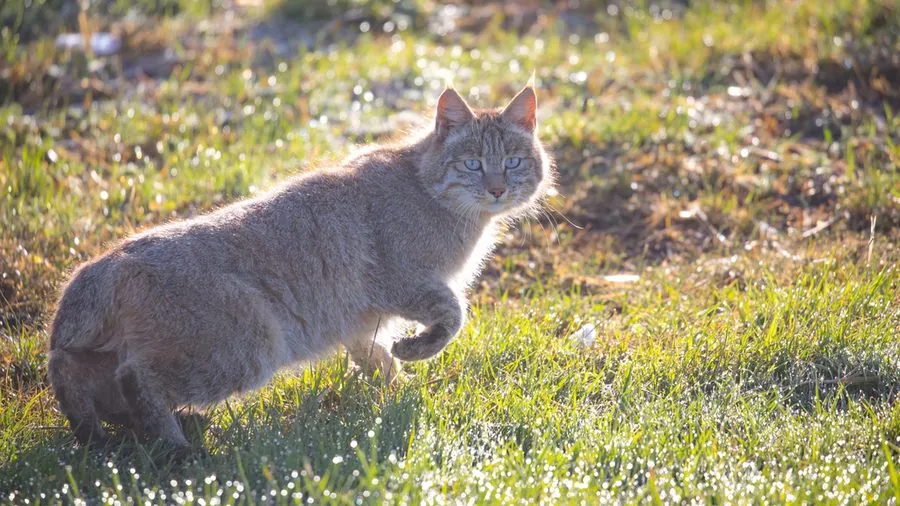

哺乳动物 · 动物界
荒漠猫 Felis bieti

中国特有的野生猫类，耳尖生有短簇毛，毛色沙黄带模糊横纹，栖于青藏高原东缘的高寒草甸与荒漠，行踪隐秘，数量稀少。
- 分类
- 门脊索动物门纲哺乳纲目食肉目科猫科属猫属
- 栖息环境
- 海拔 2500–5000 米的高寒草甸、荒漠草原、灌丛与农田边缘
- 地理分布
- 中国青海、四川西北部、甘肃南部与西藏东部的高原地区
- 保护级别
- IUCN 易危（VU）；中国国家一级保护动物
物种志
荒漠猫体形与家猫相近，成年体重约 4–6 千克，体长约 60–80 厘米，尾较长而蓬松，约占体长一半。毛被厚密以适应高寒，体色沙黄至灰褐，背部与体侧有模糊的暗色横纹，四肢外侧有环纹，耳尖生有一小撮短簇毛，颊部毛长，足底肉垫被长毛覆盖，便于在寒冷地面行走。
它们是青藏高原东缘的特有物种，栖息于海拔 2500–5000 米的高寒草甸、荒漠草原与灌丛，多在夜间和晨昏单独活动，以高原鼠兔、鼢鼠、田鼠为主食，也捕食小鸟和昆虫。荒漠猫不擅攀爬，主要在地面猎食，靠伏击和突袭捕捉洞道附近的啮齿动物，对控制鼠害有重要作用。每年春季发情，孕期约 60–70 天，每胎 2–4 仔，幼猫由母猫独自抚育。由于其分布区人烟稀少、观察困难，野外种群数量至今缺乏准确估计。
形态与习性
- 体长约 60–80 cm，尾长 30–40 cm
- 体重约 4–6 kg
- 食性高原鼠兔、鼢鼠、田鼠为主，兼食小鸟与昆虫
- 繁殖春季发情，孕期约 60–70 天，每胎 2–4 仔
- 活动节律夜行与晨昏活动，白天多在洞穴或岩石缝中休息
- 栖息海拔约 2500–5000 m
- 种群现状野外数量缺乏系统统计，估计数千只，局部因灭鼠行动而受影响
趣味知识
- 荒漠猫是中国特有的猫科动物，模式标本采自四川康定一带。
- 它足底的肉垫被长毛覆盖，走在冰雪上不易打滑也不易受冻。
- 荒漠猫几乎不爬树，捕猎全靠在地面伏击鼠兔的洞口。